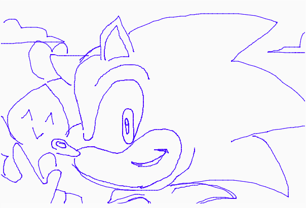

Hello there!
This is Shari's DIY Photoshop.

This is piece is dedicated for countless hours of drawing on the family computer, aiming for a MSpaint feel. While it's a very basic tool but it's a nostalgic one at that.
Try your own drawing down below!